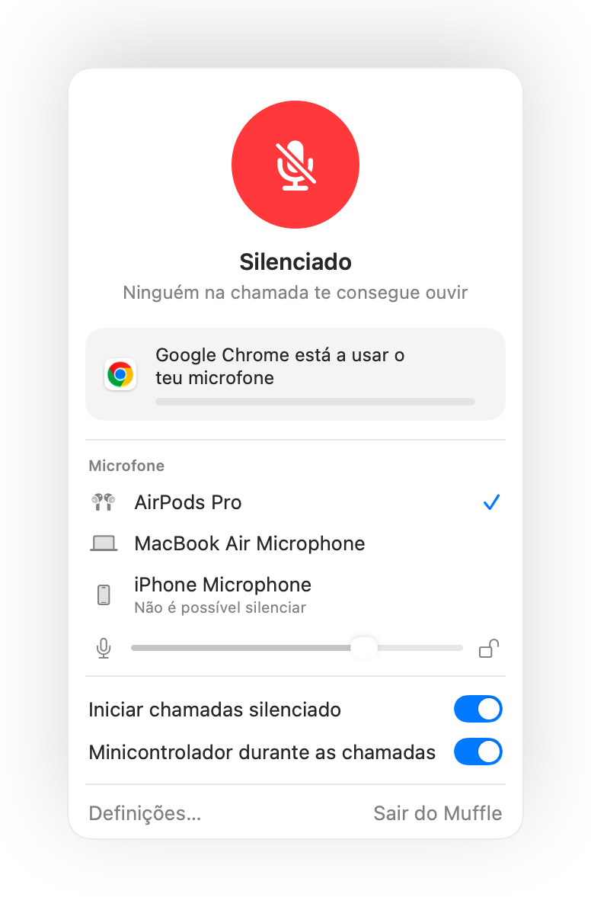

Silenciar nos AirPods não funciona no Mac? Eis a solução
O macOS permite silenciar uma chamada premindo a haste dos teus AirPods, mas apenas se a app de chamada for compatível. Muitas não são, incluindo o Chrome e as videochamadas no navegador. Prime-se a haste, ouve-se um sinal de erro, surge a mensagem "Não é possível controlar o microfone" e a chamada continua a ouvir-te.
O Muffle adiciona esse suporte a todas as apps. Recebe a pressão na haste, silencia o microfone do teu Mac e reproduz o som habitual de silêncio.
Fazer a pressão nos AirPods silenciar qualquer app
- Instala o Muffle e permite o acesso ao microfone. O macOS só envia a pressão às apps que podem utilizar o microfone.
- Verifica se a opção "Silencia e ativa com uma pressão nos AirPods" está ativada nas Definições do Muffle.
- Entra numa chamada. A pressão apenas silencia enquanto uma app estiver a usar o microfone.
- Prime a haste uma vez para silenciar e outra para ativar.

- Fora das chamadas, a pressão continua a reproduzir e a pausar música normalmente.
- Se os teus AirPods utilizam uma pressão diferente para controlos de chamadas, verifica as definições dos AirPods nas Definições do Sistema.
Perguntas frequentes
Por que razão o meu Mac emite um som de erro quando primo os AirPods?
A app a partir da qual estás a fazer a chamada não é compatível com o gesto de silêncio dos AirPods, pelo que o macOS o rejeita. Com o Muffle aberto, essa pressão silencia o teu microfone.
Quais os AirPods compatíveis com o gesto para silenciar?
AirPods Pro, AirPods 3 e posteriores e AirPods Max, além de modelos Beats compatíveis com controlos de chamada.